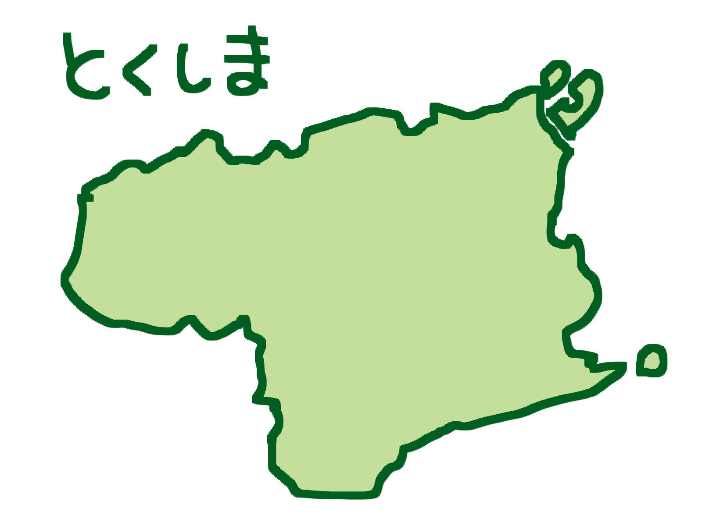

徳島で見つける、
あなた好みのうどん。
サブタイトルサブタイトルサブタイトルサブタイトル
jsハンバーガーメニュー、jsアコーディオンメニュー、cssホバーアニメーションの動作確認のため作成しました。
命名ルール無視、効率の悪いcss設計なのは見逃してください。


県外からのアクセス

モデルコース
上記アコーディオンについて
JSで実装。htmlのここの下に記述したscript部分とcssクラスで動作しています。参考サイトよりコピーしてきたため、使用していないクラス名やliなどがありますが、一応動作するのでそのままにしています。要改善。